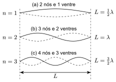
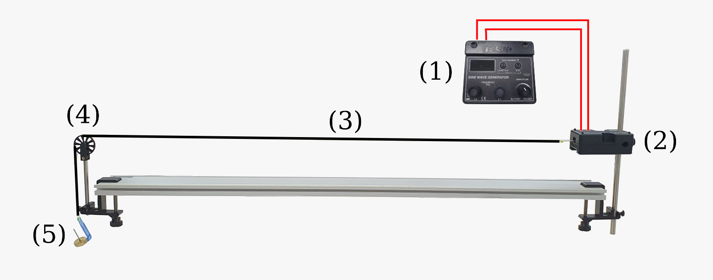

Harmônicos em uma Corda Vibrante
Introdução
Ondas estacionárias formam-se pela interferência de duas ondas progressivas idênticas que se propagam em sentidos opostos no mesmo meio, como ocorre em uma corda esticada cujas extremidades refletem as ondas geradas por uma fonte vibrante. Quando a frequência da vibração coincide com um dos valores de ressonância, surgem padrões estáveis de oscilação — as ondas estacionárias — caracterizados pela presença de nós, pontos de amplitude nula, e ventres ou anti-nós, onde a amplitude é máxima, correspondendo aos diferentes modos naturais de vibração da corda (Halliday; Resnick; Walker, 2016).

Fonte: Labfis (2026)
Como ilustrado na Figura 1, para cada modo de oscilação da onda estacionária, o comprimento de onda (\(\lambda\)) satisfaz a seguinte relação:
\[ \lambda = \dfrac{2L}{n}, \quad \text{ para } n = 1, 2, 3, \cdots \tag{1}\]
em que \(n\), denominado número harmônico, é a quantidade de ventres observados na onda.
Lembrando que para qualquer onda com comprimento de onda \(\lambda\) e frequência \(f\), a velocidade de propagação da onda, \(v\), é dada por:
\[ v = \lambda f \tag{2}\]
Substituindo \(\lambda\) da Equação 1 na Equação 2,
\[ f = \dfrac{v}{2L} n, \quad \text{ para } n = 1, 2, 3, \cdots \tag{3}\]
Por outro lado, se a corda tem massa \(m\) e comprimento total \(l\) e está fujeita a uma força de tensão \(F\), a velocidade \(v\) de propagação da onda também pode ser determinada pela relação:
\[ v = \sqrt{\dfrac{F}{\mu}} \tag{4}\]
em que \(\mu = \dfrac{m}{l}\) é a massa específica linear da corda.
Substituindo \(v\) da Equação 4 na Equação 3, obtemos a seguinte expressão para as frequências de ressonância em função do número harmônico \(n\):
\[ f = f_1 \cdot n \tag{5}\]
em que
\[ f_1 = \dfrac{1}{2L} \sqrt{\dfrac{F}{\mu}} \tag{6}\]
é denominado primeiro harmônico ou frequência fundamental. Note que, de acordo com a Equação 5, cada modo de oscilação é um múltiplo inteiro do primeiro harmônico \(f_1\).
Neste experimento, ondas estacionárias são geradas em uma corda esticada,por meio de vibrações de um gerador de ondas senoidais acionado eletricamente. A disposição do aparelho é mostrada na Figura 2. A tensão na corda é igual ao peso das massa suspensa sobre a polia.
Objetivos
- Compreender a relação entre a frequência, o comprimento da corda, a tensão e os diferentes modos de vibração (harmônicos) das ondas estacionárias;
- Determinar a velocidade de propagação de uma onda estacionária em uma corda vibrante.
Material Necessário

Fonte: Labfis (2026)
- Gerador de ondas senoidais (1);
- Gerador de vibrações (2);
- Fio trançado inelástico (3);
- Polia e haste (4);
- Conjunto de massa e suporte (5);
- Trena, balança digital e acessórios.